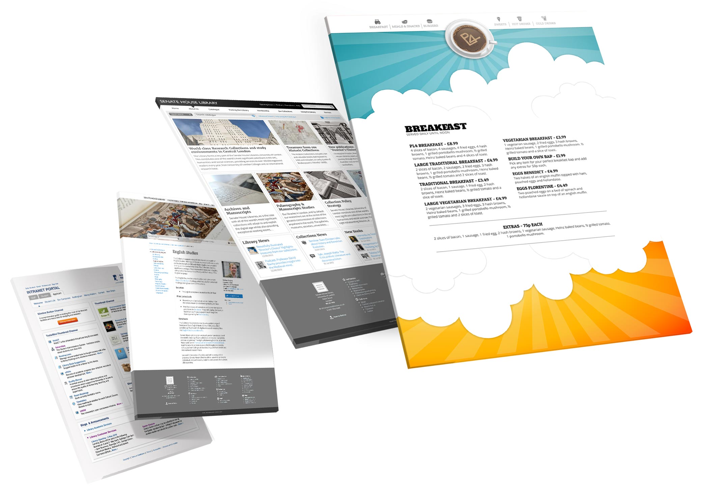
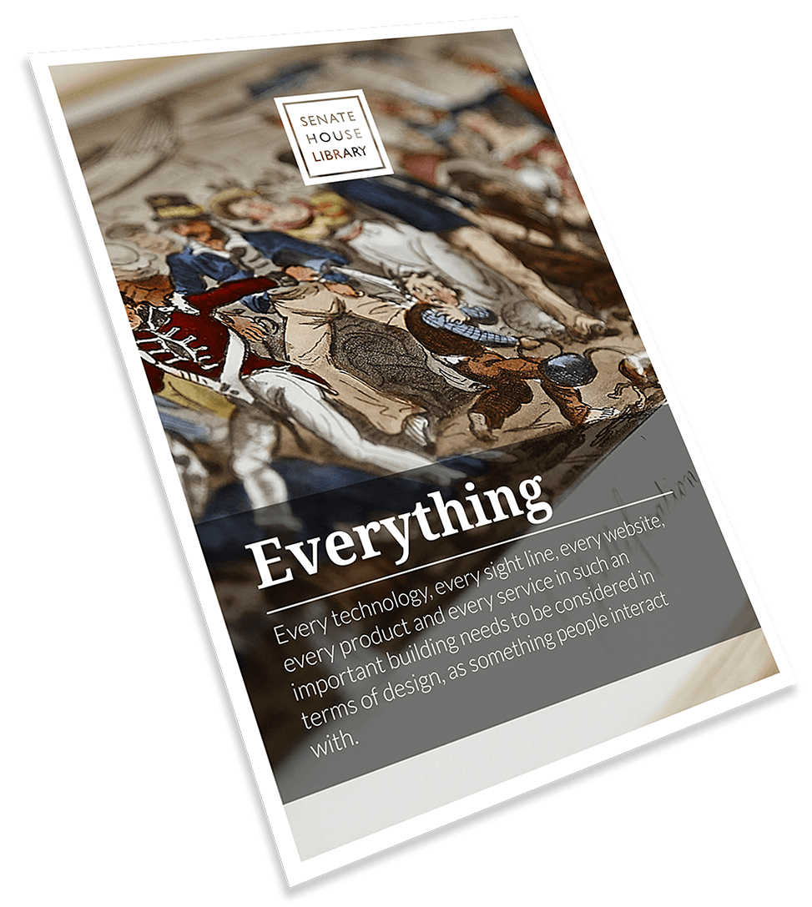

A Portfolio of Joe Honywill
Hello, I’m Joe.
I’m a designer who’s been working with web technologies for over 20 years. In that time my job titles have described me as a Demonstrator, Technologist, Manager and Associate Director but it is design that has always been at the heart of what I do. I’ve got a degree in Media Lab Arts (now called Digital Art Technologies) and I am based in Plymouth in the South West of England.
John Faulkner, artist and humourist
Designers are often expected to have a portfolio, a way of showing examples of work from previous projects. For web designers, these portfolios often take the form of a gallery of screenshots accompanied by a list of technologies used. There is, however, some debate about how effective these kinds of examples are at demonstrating a designer’s skill and experience.
PL4 Cafe
The problem with these types of portfolios is that they only ever reveal part of the bigger picture – pun intended - and what they don’t show is too important to ignore.
Design is a process. A process impossible to rationalise with static pictures alone.
They can’t show context; how something meets customer or client needs; how it contributes to business goals; or any relationship to broader strategies. In short, whilst they can hint at skill levels they can only show a fraction of a designer’s value and experience.
Senate House Library
That is why you won’t find that type of portfolio here. What you will find is an invitation to talk. By talking about previous projects, I can fill the gaps that an image only portfolio would create. Critically, it will give me a chance to listen to you and offer some insight into how I can help.
Please feel free to get in touch...
SHL Digital Collections
